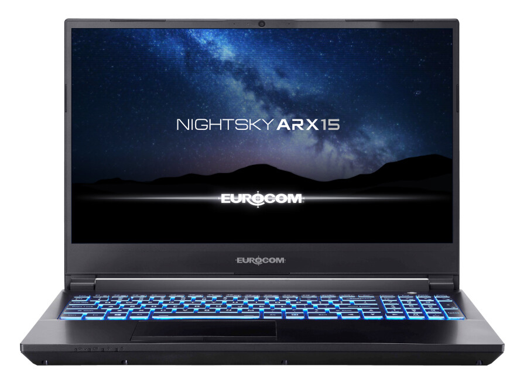
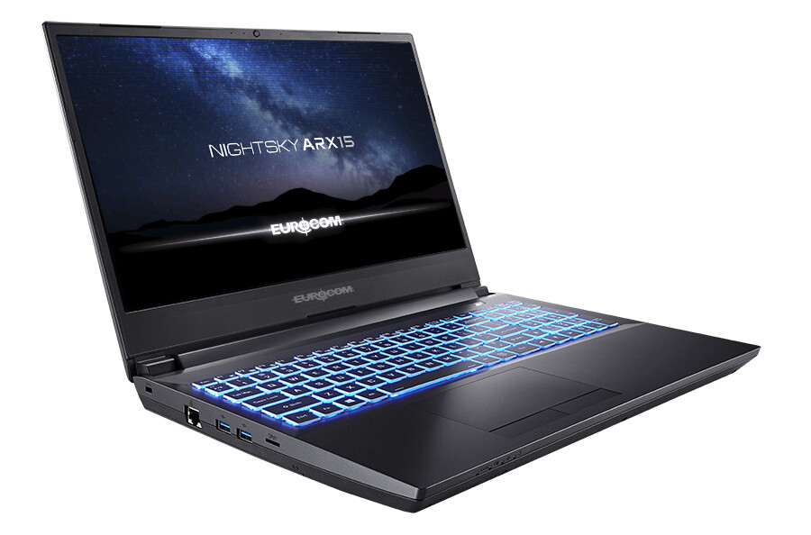
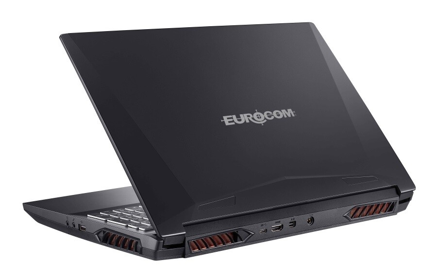

컴퓨터를 괴롭히는 사람들 "컴괴사"
컴괴사는 컴퓨터 하드웨어 주가 되는 곳이며, 여러분이 만들어가는 커뮤니티 입니다.

Created By @cch_in
컴퓨터를 괴롭히는 사람들 "컴괴사"
Created By @cch_in
| 인기뉴스 [뉴스] RX 5000 시리즈 인텔 vs AMD 보급형 CPU 게이밍 성능은? 작성자 컴괴사 지름 20-05-28 17:31 조회 744 회 |
|---|
새로운 Nightsky ARX15는 Eurocom의 첫 번째 슈퍼 노트북으로, 얇고 가벼운 노트북 폼 팩터에 인상적인 AMD Ryzen 9 시리즈 데스크톱 프로세서(최대 16개의 코어 / 32개의 스레드)를 제공합니다. NVIDIA의 최신 세대의 NVIDIA GeForce RTX 그래픽(RTX 2070 & RTX 2060)과 결합된 EUROCOM Nightsky ARX15는 사용자에게 새로운 성능의 정점에 도달할 수 있는 엄청난 힘을 부여합니다.
AMD Ryzen 3000 시리즈 데스크톱 CPU가 장착된 EuroCOM Nightsky ARX15 Superlaptop은 최대 16개의 코어 및 32개의 스레드를 갖춘 강력한 AMD Ryzen 9 시리즈 CPU를 갖춘 Eurocom의 첫 번째 노트북입니다. 사용자는 무게가 2.6kg에 불과한 얇고 가벼운 시스템에서 엄청난 성능을 제공하는 NVIDIA GeForce RTX 2070 또는 NVIDIA GeForce RTX 2060으로 ARX15 슈퍼 노트북을 구성할 수 있습니다. CPU 업그레이드 가능, 사용자 업그레이드 및 모듈식 설계를 통해 EUROCOM Nightsky ARX15는 사용자에게 새로운 전력 임곗값을 제공할 수 있는 권한을 부여합니다.
  스토리지, 메모리 및 사용자 업그레이드 기능을 제공합니다.
Nighstky ARX15는 노트북의 최대 스토리지 공간과 메모리/RAM을 원하는 사용자를 위해 3개 드라이브에 걸쳐 최대 16TB의 스토리지 데이터를 지원할 수 있는 액세스와 사용자 업그레이드가 가능한 스토리지 및 메모리 슬롯을 갖추고 있습니다. 여기에는 PCI-Express 3.0 x4 또는 SATA III를 통한 M.2 2280 SSD, M.2 2280 SSD PCI-E 2.0 x4 1개 및 추가된 2.5" SSD/HDD(7mm)가 포함됩니다. 또한 Nightsky ARX15는 가장 까다로운 프로젝트와 애플리케이션도 처리할 수 있도록 최대 64GB의 DDR4 RAM으로 구성할 수 있습니다.
연결 측면에서 Nightsky ARX15는 1xUSB-A 2.0, 2xUSB-A 3.2 Gen2, 1xUSB-C 3.2 Gen2, 1xMini DisplayPort 1.4(G-SYNC 호환 모니터 지원), 1xHDMI 2.0(HDCP 2 사용)을 지원합니다.
Nightsky ARX15와 같은 Eurocom 노트북의 주요 특징은 사용자가 원하는 대로 이 강력한 노트북을 최첨단으로 유지할 수 있도록 하는 모듈식 양말 디자인입니다. 파워유저들이 그들의 EUROCOM Nightsky ARX15를 어떻게 구성하기를 선호하든 간에, 그들은 그것이 직장에 있든, 게임에서든, 혹은 둘 다에서 제한을 가하고 새로운 높이에 도달할 수 있는 최고의 자유를 가질 것입니다.
Nightsky ARX15 기술 사양 :
칩셋 : AMD B450
CPU : AMD Ryzen 3000 데스크톱 CPU | 소켓 기반
* AMD Ryzen 9 3950X (16 코어 / 32 스레드)
* AMD Ryzen 9 3900X (12C / 24T)
* AMD Ryzen 7 3800X (8C / 16T)
* AMD Ryzen 7 3700X (8C / 16T)
* AMD Ryzen 5 3600X (6C / 12T)
메모리 : 2x DDR4 SO-DIMM, 듀얼 채널, 최대 64GB
그래픽 : (GPU On-Board) : USB-C 연결을 통한 디스플레이, HDMI, Mini DisplayPort, DP : 직접
* NVIDIA GeForce RTX 2060 | 6GB GDDR6 | 최대 115W
* NVIDIA GeForce RTX 2070 | 8GB GDDR6 | 최대 115W
디스플레이 : 15.6 "Full HD IPS | 144 Hz | 얇은 베젤 | 눈부심 방지 | 90 % sRGB |
저장 장치:
* 2개의 M.2 및 1x 2.5 "SATA3 슬롯 / 베이
* PCI-Express 3.0 x4 또는 SATA III를 통한 1x M.2 2280 SSD
* 1x M.2 2280 SSD PCI-E 2.0 x4
* 1x 2.5 "SATA3 SSD / HDD (7mm)
네트워킹 : 1GbE LAN 및 M.2 WLAN + Bluetooth
운영체제 : Microsoft Windows 10 or Linux
오디오 :
* 고화질 스테레오 스피커
* 소음 제거 기능이 있는 마이크
* 사운드 블래스터 시네마 6
포트 :
* 1x USB-A 2.0
* 2x USB-A 3.2 Gen2
* 1x USB-C 3.2 Gen2 (DisplayPort : 예, 전원 공급 : 아니요)
* 1x Mini DisplayPort 1.4 (G-SYNC 호환 모니터 지원)
* 1x HDMI 2.0 (HDCP 2.2 포함)
* 1x 헤드폰 출력 (스마트폰 헤드셋 지원)
* 1x 마이크인
* 1x RJ45 포트 (LAN)
* 1x microSD 카드 리더
퀘이사존의 창작 콘텐츠가 아닌 해외 IT 매체 테크파워업의 단순 번역본 뉴스입니다.
원문 출처 techpowerup